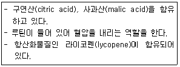
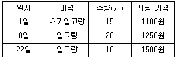
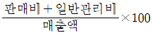
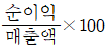
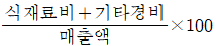

조리산업기사(공통) (2019-03-03 기출문제)
1과목: 식품위생 및 관련법규
1. 화학성 식중독을 일으키는 원인 물질과 증상이 바르게 연결된 것은?
- 비소-전신경련, 언어장애
- 수은-신경염, 흑피증, 각화증
- 카드뮴-신장기능장애, 골연화증
- 주석-배꼽 주변의 통증, 피부발진
(정답률: 77%)

2. 안식향산(benzoic acid)의 용도로 옳은 것은?
- 유지의 산화 방지
- 식품의 부패 방지
- 식품의 색도 유지
- 식품의 향기 부여
(정답률: 63%)
3. Penicillium citrinum이 생성하는 독소로 신장에 문제를 일으키는 것은?
- 시트리닌(citrinin)
- 루테오스크린(luteoskyrin)
- 아이스란디톡신(islanditoxin)
- 시트로비리딘(citreoviridin)
(정답률: 73%)
4. 식품 제조공정에서 거품을 없애는 목적으로 사용되는 식품첨가물은?
- 유화제
- 이형제
- 소포제
- 보존제
(정답률: 78%)
5. 식품위생법에서 완제품을 나누어 소분ㆍ판매할 수 있는 것은?
- 벌꿀
- 전분
- 장류
- 레트로트식품
(정답률: 70%)
6. 살균이 불충분한 통조림을 먹고 식중독이 일어났을 때 추정할 수 있는 원인균은?
- 보툴리누스균(Clostridium botulinum)
- 살모넬라균(Salmonella)
- 장염비브리오균(Vibrio parahaemolyticus)
- 황색 포도상구균(Staphylococcus aureus)
(정답률: 78%)
7. 냉동식품에 대한 분변오염 지표가 되는 것은?
- 보툴리누스균
- 황색 포도상구균
- 장염비브리오균
- 장구균
(정답률: 60%)
8. 식품의 변질 중 산패와 가장 관계있는 현상은?
- 단백질의 분해
- 탄수화물의 변질
- 지방의 산화
- 당질의 미생물 작용
(정답률: 69%)
9. 식중독 환자를 진단한 의사 또는 한의사가 지체 없이 보고해야 하는 대상은?
- 관할 특별자치시장ㆍ시장ㆍ군수ㆍ구청장
- 관할 보건소장
- 식품의약품안전처장
- 보건복지부장관
(정답률: 62%)
10. 그람양성의 통성혐기성균으로 식중독 증상으로 패혈증, 수막염 및 유산 등을 유발하는 저온균은?
- 리스테리아 모노사이토재네스균(Listeria monocytagenes)
- 살모넬라균(Salmonella)
- 스타필로코커스 아우레우스균(Staphylococcus aureus)
- 클로스트리디움 퍼프린젠스균(Clostrisium perfringens)
(정답률: 42%)
11. 살균 효과가 가장 강한 알코올 농도는?
- 60~65%
- 70~75%
- 80~85%
- 90~95%
(정답률: 70%)
12. 알레르기(Allergy)성 식중독에 대한 설명으로 틀린 것은?
- 부패산물의 하나인 헤스페리딘(hesperidin)이 원인이다.
- 꽁치, 고등어, 참치 등의 어류나 그 가공품이 원인이 된다.
- 두드러기 같은 발진, 두통, 발열 등의 증상이 나타난다.
- 항 히스타민제의 투여로 치료가 가능하다.
(정답률: 50%)
13. 식품위생법상 영업허가를 받아야 하는 업종은?
- 식품조사처리업
- 식품소분ㆍ판매업
- 양곡가공업 중 도정업
- 즉석판매제조ㆍ가공업
(정답률: 65%)
14. HACCP(식품안전관리인증기준) 작용업소는 이 기준에 따라 관리되는 사항에 대한 기록은 최소 몇 년 이상 보관하여야 하는가? (단, 관계법령에 특별히 규정된 것은 제외)
- 1년
- 2년
- 5년
- 10년
(정답률: 61%)
15. 식품 등의 표시기준에 의한 “유통기한”에 대한 설명으로 옳은 것은?
- 제조일을 사용하여 유통기한을 표시하는 경우에는 “제조일로부터 OO일 까지”로 표시할 수 없다.
- 도시락의 유통기한은 “OO월 OO일 까지”로 표시하여야 한다.
- 유통기한을 주표시면 또는 일괄표시면에 표시하기가 곤란한 경우에는 해당위치에 유통기한의 표시위치를 명시화여야 한다.
- 유통기한이 서로 다른 여러 가지 제품을 함께 포장하였을 경우에는 그 중 가장 유통기한이 긴것을 표시하여야 한다.
(정답률: 66%)
16. 열경화성 수지인 페놀수지, 멜라민수지, 요소수지 등에서 검출될 수 있는 유해물질은?
- 납
- 메탄올
- 포름알데히드
- 염화비닐단량체
(정답률: 62%)
17. 식품위생법상 조리사로서 영업에 종사할 수 있는 경우는?
- 조리사 면허의 취소처분을 받고 그 취소된 날부터 1년이 지나지 아니한 자
- 세균성이질환자
- 화농성질환자
- B형간염환자
(정답률: 68%)
18. 살균효과가 큰 순서대로 나열된 것은?
- 멸균＞정균＞살균
- 멸균＞살균＞정균
- 정균＞멸균＞살균
- 살균＞정균＞멸균
(정답률: 67%)
19. 곰팡이 독소가 아닌 것은?
- 오크라톡신(ochrtoxin)
- 시큐톡신(cicutoxin)
- 시트리닌(citrinin)
- 아플라톡신(aflatoxin)
(정답률: 54%)
20. 식품의 부패판정법 중 세균학적 판정법에 대한 설명으로 틀린 것은?
- 측정에 시간이 많이 걸린다.
- 식품 1g당 생균수가 107~108에 도달하면 초기부패가 진행한 것으로 본다.
- 세균수를 측정하는 것에 의해 식품의 부패를 검출ㆍ판정할 수 있다.
- 모든 식품의 초기 부패 판정에 적용한다.
(정답률: 60%)
2과목: 식품학
21. 물이 비슷한 분자량의 다른 화합물에 비해 높은 녹는점, 끓는점, 표면장력을 나타내는 이유는?
- 물 분자가 극성분자이므로
- 물이 결합수와 자유수로 존재하므로
- 얼음보다 물의 밀도가 크기 때문에
- 물 분자 사이의 수소결합 때문에
(정답률: 63%)
22. 사과 100g에 수분 86.3%, 단백질 0.2%, 지질 0.1%, 회분 0.3%, 탄수화물 13.1%를 함유하고 있을 경우 사과의 열량은 얼마인가?
- 54.1kcal
- 55.3kcal
- 61.5kcal
- 120.0kcal
(정답률: 55%)
23. 지방의 분해에 관여하는 효소는?
- 레닌(rennin)
- 아밀라아제(amylase)
- 리파아제(lipase)
- 팹티다아제(peptidase)
(정답률: 58%)
24. 마늘의 주요 냄새 성분은?
- 디알릴디설파이드(diallyl disulfide)
- 맨톨(menthol)
- 바닐린(vanillin)
- 디아세틸(diacetyl)
(정답률: 63%)
25. 유지의 발연점, 인화점, 연소점에 영향을 미치는 요인이 아닌 것은?
- 유지의 비중
- 유지의 정제정도
- 노출된 유지의 표면적
- 유리지방산의 함량
(정답률: 44%)
26. 단당류의 유도체가 아닌 것은?
- 알돈산(aldonic acid)
- 우론산(uronic acid)
- 당알코올(sugar alcohol)
- 시니그린(sinigrin)
(정답률: 58%)
27. 과당의 중합체인 프럭탄(fructan)류에 속하는 다당류는?
- 전분(starct)
- 한천(agar)
- 이눌린(inulin)
- 섬유소(cellulose)
(정답률: 52%)
28. 젤(get)화 식품의 특성을 설명한 것 중 틀린 것은?
- 양갱, 우무는 펙틴을 이용한 젤이다.
- 청포묵, 메밀묵은 전분을 이용한 젤 식품이다.
- 젤화식품은 가열 시 액체상태인 졸(sol)로 변하기도 한다.
- 젤이 수축되면서 액체의 일부가 분리되는 현상을 이장현상(syneresis)이라 한다.
(정답률: 53%)
29. 성인의 필수아미노산이 아닌 것은?
- 메티오닌(methionone)
- 히스티딘(histidine)
- 이소로이신(isoleucine)
- 트립토판(tryptophan)
(정답률: 52%)
30. 무를 가열 조리 시 생성되는 단맛의 성분은?
- 메틸메르캅탄(methyl mercaptan)
- 알리신(allicin)
- 아스파탐(aspartame)
- 슈크로오스(sucrose)
(정답률: 55%)
31. 샐러드 제조 시 녹색 채소가 산에 의해 황갈색으로 변색되는 이유는?
- 안토시아닌의 산화
- 안토잔틴의 고리구조 개열
- 클로로필의 페오피틴 전환
- 카로티노이드의 산화
(정답률: 63%)
32. 단백질의 1차 구조를 형성하는 결합은?
- 수소성결합
- 수소결합
- 펩티드결합
- 디설파이드(disulfide)결합
(정답률: 55%)
33. 전분의 호화에 관여하는 요소가 아닌 것은?
- 전분입자의 크기
- pH
- 금속이온
- 온도
(정답률: 60%)
34. 다음 식품 중 아래와 같은 생리적 특성이 있는 것은?

- 사과
- 토마토
- 오렌지
- 오이
(정답률: 64%)
35. 두부 제조 시 응고제로 많이 쓰이는 것은?
- 황산칼슘(CaSO4)
- 염화나트륨(NaCl)
- 염화암모늄(NH4Cl)
- 염화칼륨(KCl)
(정답률: 47%)
36. 알긴산(alginic acid)에 대한 설명으로 틀린 것은?
- 아이스크림, 젬 등의 증정제로 사용된다.
- 김, 우뭇가사리 등 홍조류에 주로 함유된 성분이다.
- 구성성분은 만누른산(manuronic acid)이다.
- 사람의 소화효소로 분해되지 않기 때문에 영양성분이 되지는 않으나, 식이섬유로 작용한다.
(정답률: 44%)
37. 유지의 자동산화를 촉진하는 요인이 아닌 것은?
- 자외선
- 지방산의 불포화도
- 구리(Cu)
- 폴리페놀(polyphenol)
(정답률: 46%)
38. 유지의 요오드가에 대한 설명으로 옳은 것은?
- 동물성유지는 요오드가가 높다.
- 지방산의 불포화 정도를 나타내는 값이다.
- 유지 100g 중에 흡수되는 요오드의 mg 수이다.
- 유지에 수소를 첨가하는 강화유의 제조 시 그 값은 증가한다.
(정답률: 36%)
39. 섬유소(cellulose)에 대한 설명으로 틀린 것은?
- a-D-glucose가 β-1.4 결합으로 연결되어 있다.
- 인체에는 cellulose를 분해하는 효소가 없다.
- 장의 연동운동을 촉진하는 기능이 있다.
- 혈중 콜레스테롤을 감소시킨다.
(정답률: 50%)
40. 효소적 갈변과 관련이 없는 것은?
- 감자
- 홍차
- 된장
- 사과
(정답률: 59%)
3과목: 조리이론 및 급식관리
41. 꽁치 구이를 할 때 정미중량 75g을 조리하고자 한다. 1인당 구매량은 얼마로 하여야 하는가? (단, 꽁치의 폐기율:35%)
- 약 116g
- 약 123g
- 약 133g
- 약 192g
(정답률: 48%)
42. 우유에 대한 설명으로 틀린 것은?
- 우유 중의 카제인은 알칼리와 열에 응고된다.
- 우유를 가열하면 표면에 피막이 형성되는데 뚜껑을 덮거나 저어가면서 가열하면 피막형성을 방지할 수 있다.
- 우유를 고온으로 장시간 가열하면 마이야르(maillard) 반응에 의해 갈변된다.
- 우유는 가열하면 황화수소와 같은 황화합물이 형성되어 독특한 향취가 난다.
(정답률: 42%)
43. 닭을 가열 조리할 때 닭뼈 주위의 근육이 짙은 갈색으로 변하는 이유는?
- 닭이 지방이 가열에 의한 변색
- 병에 걸린 닭의 가열에 의한 변색
- 늙은 닭의 질긴 육질이 가열에 의한 변색
- 해동한 냉동 닭의 가열에 의한 변색
(정답률: 67%)
44. 두류를 연하게 하는 조리방법이 아닌 것은?
- 약 1%의 소금물에 담가 두었다가 그대로 조리한다.
- 0.3%의 중조수를 사용하여 가열한다.
- 경수를 사용하여 조리한다.
- 물에 담가 충분히 물이 흡수된 다음 조리한다.
(정답률: 46%)
45. 어느 식당의 한 달간 통조림 구입 내역이 아래와 같을 때, 월말에 재고조사를 한 결과 19개가 남았다면 선입선출법에 의한 재고금액은?

- 19800원
- 20750원
- 25000원
- 26250원
(정답률: 51%)
46. 육류의 사후경직기에 일어나는 현상이 아닌 것은?
- 이노신산(inosinic acid)이 생성된다.
- 포스파타아제(phosphatase)가 활성화된다.
- 젖산(lactic acid)가 생성된다.
- ATP 분해효소의 작용으로 인산이 생성된다.
(정답률: 34%)
47. 어류에 대한 설명으로 틀린 것은?
- 등푸른 생선에는 고도불포화지방산인 EPA(eicosapentaenoic acid)와 DHC(docosahexaenoic acid)가 많다.
- 갈치 껍질의 은색은 구아닌(guanine)과 요산이 섞인 침전물이 빛을 반사하기 때문이다.
- 붉은살 생선이 흰살 생선보다 경직이 빨리 시작되며 시간도 짧아 자기소화도 빨리 일어난다.
- 생선의 신선도가 저하되어 비린내가 나는 것은 트리메틸아민(TMA)의 양이 감소하고 황화수소가 생성되기 때문이다.
(정답률: 56%)
48. 식품의 계량 방법 중 틀린 것은?
- 액체는 계량기구를 수평으로 놓고 액체표면 윗부분을 눈과 수평으로 맞추어 눈금을 읽는다.
- 밀가루를 체에 쳐서 계량컵에 수북이 담고 직선으로 된 칼 등으로 깎아서 계량한다.
- 흙설탕은 계량컵에 꾹꾹 눌러 담아 수평으로 깎아서 계량한 후 엎었을 때 컵 모형이 나오도록 한다.
- 버터 같은 고체 지방은 실온에서 부드럽게 한 후 계량기구에 꾹꾹 눌러 수평으로 깎아서 계량한다.
(정답률: 46%)
49. 조리 시 열전달에 대한 설명으로 틀린 것은?
- 열전도율이 낮은 조리기구는 느리게 가열되나 보온성이 높다.
- 점도가 낮은 액체는 높은 액체에 비해 빨리 식는다.
- 조리기구 표면이 어두운 색은 밝은 색에 비해 빨리 가열된다.
- 조리기구의 표면이 매끈하고 반짝거릴수록 복사열의 흡수가 빠르다.
(정답률: 54%)
50. 기름을 발라 김을 구울 때 나타나는 효과로 옳은 것은?
- 비타민 A의 흡수 증가
- 비타민 B의 흡수 증가
- 비타민 C의 흡수 증가
- 비타민 P의 흡수 증가
(정답률: 52%)
51. 백색채소를 조리할 때 담황색이 되게 하는 성분은?
- 중조
- 소금
- 식초
- 설탕
(정답률: 47%)
52. 원가의 3요소와 관계가 없는 것은?
- 재료비:주식비, 부식비 등
- 감가상각비:이자, 통신비, 퇴직금 등
- 인건비:임금, 각종 수당, 상여금 등
- 경비:수도광열비, 전력비, 보험료 등
(정답률: 61%)
53. 식품과 고기를 연화시키는 단백질 분해효소가 맞게 연결된 것은?
- 무화과-브로멜린(bromelin)
- 파인애플-파파인(papain)
- 배-피신(ficin)
- 키위-액티니딘(actinidin)
(정답률: 58%)
54. 콩조림을 만들 때 처음부터 간장이나 설탕 등의 조미료를 첨가하여 끓이면 콩이 딱딱해지는 것은 어떤 현상 때문인가?
- 삼투압현상
- 모세관현상
- 용출현상
- 팽윤현상
(정답률: 67%)
55. 조리 시 조미료의 침투가 잘 되도록 하기 위한 조미료를 넣는 순서가 옳은 것은?
- 소금→설탕→식초
- 소금→식초→설탕
- 설탕→소금→식초
- 설탕→식초→소금
(정답률: 60%)
56. 호화된 쌀에 우유를 조금씩 넣으면서 약한 불에서 끓인 음식은?
- 콘소메
- 미음
- 응이
- 타락죽
(정답률: 69%)
57. 식품 구매 시 대체 식품으로 옳은 것은?
- 치즈-버터, 마가린
- 밥-국수, 라면
- 우유-당근, 오이
- 두부-뱅어포, 멸치
(정답률: 61%)
58. 밀가루 반죽에 대한 설명으로 틀린 것은?
- 강력분 반죽에는 박력분보다 더 많은 양의 물이 필요하며 오래 반죽해야 한다.
- 같은 종류의 밀가루라도 물을 조금씩 나누어 넣는 것이 더 많은 글루텐 형성에 도움이 된다.
- 밀가루 입자의 크기가 클수록 글루텐 형성이 잘된다.
- 바삭한 튀김옷을 만들기 위해서는 냉수로 반죽을 만든다.
(정답률: 51%)
59. 식품을 응고시켜 질감을 향상시킬 때 한천이 주로 사용되는 것은?
- 아이스크림
- 양갱
- 마신멜로우
- 무스케익
(정답률: 74%)
60. 원가분석을 할 때 영업성과를 측정하는 지표로 사용되는 이익률 산출의 계산식은?

- (총 매출액-총 변동비)×100


(정답률: 53%)
4과목: 공중보건학
61. 건조 상태에서 정상공기의 화학적 조성으로 틀린 것은?
- O2-약 21%
- CO2-약 0.3%
- Ar-약 0.93%
- N2-약 78%
(정답률: 52%)
62. 세균성이질에 대한 설명으로 틀린 것은?
- 급성 세균성 질환이다.
- 계절적으로 11월부터 3월까지 집중된다.
- 지리적으로 열대, 한대, 온대 전 지역에서 발생한다.
- 발열, 구토, 경련 등이 일어나며 심할 때는 점액성 혈변을 일으킨다.
(정답률: 56%)
63. 산업장의 분진으로 발생되는 장애는?
- 고산병
- 잠함병
- 레이노드씨병
- 규페증
(정답률: 67%)
64. 수질검사에서 과망간산칼륨의 소비량이 측정하는 것은?
- 수중 유기물의 양 측정
- 대장균군의 양 측정
- 분변오염 양 측정
- 색도 및 탁도 측정
(정답률: 53%)
65. 감염병 유행의 양식에 대한 설명으로 틀린 것은?
- 생물학적 현상으로 연령, 성별, 인종에 의한 차이가 있다.
- 시간적 현상으로 추세변화와 순환변화, 계절적변화, 불규칙변화가 있다.
- 지리적 현상으로 지방적 유행, 전국적 유행, 범발적 유행, 산발적 유행이 있다.
- 경제적 현상으로 거주, 인구이동, 직업, 문화제도가 있다.
(정답률: 51%)
66. 기생충의 생물형태학적 분류 중 선충류에 속하는 것은?
- 간흡충
- 사상충
- 갈고리촌충
- 무구조충
(정답률: 42%)
67. 병원체가 바이러스에 의한 감염병이 아닌 것은?
- 홍역
- 일본뇌염
- 장티푸스
- 유행성간염
(정답률: 44%)
68. 한 국가의 보건수준을 나타내는 지표로서 해당연도 0세 아이가 장차 살아남을 수 있는 기대수명을 무엇이라 하는가?
- 제한수명
- 평균수명
- 건강수명
- 자연수명
(정답률: 61%)
69. 잠함병의 주요 원인이 되는 공기의 성분은?
- 질소
- 산소
- 일산화탄소
- 이산화탄소
(정답률: 55%)
70. 부적당한 조명에 의한 피해가 아닌 것은?
- 근시
- 레이노드병
- 안구진탕증
- 백내장
(정답률: 63%)
71. 감염병예방법상 제1, 2, 3군 감염병의 순서가 바르게 된 것은?(관련 규정 개정전 문제로 여기서는 기존 정답인 2번을 누르면 정답 처리됩니다. 자세한 내용은 해설을 참고하세요.)
- 장티푸스-폴리오-일본뇌염
- A형간염-파상풍-말라리아
- 디프테리아-풍진-탄저
- 파라티푸스-백일해-홍역
(정답률: 43%)
72. 후천면역에 대한 설명으로 틀린 것은?
- 자연수동면역은 모체의 태반이나 수유를 통해 얻은 면역이다.
- 인공수동면역은 다른 사람의 혈청 또는 감마글로불린(γ-globulin) 등 접종을 통하여 얻게 되는 면역이다.
- 자연능동면역은 사균백신, 생균백신 등을 사용하여 얻게 되는 면역이다.
- 인공능동면역은 예방접종 후 얻게 되는 면역이다.
(정답률: 55%)
73. 하수 본처리 중 호기성 분해처리에 속하는 것은?
- 침전, 침사법
- 부패조, 임호프탱크법
- 염소소독, 약품용질법
- 상수여상법, 활성오니법
(정답률: 50%)
74. 파리가 매개하는 감염병이 아닌 것은?
- 장티푸스
- 사상충증
- 콜레라
- 결핵
(정답률: 50%)
75. 광절열두조충의 제1중간숙주는?
- 다슬기
- 물벼룩
- 가재
- 연어
(정답률: 44%)
76. 전파체의 종류 중 활성전파체에 속하는 것은?
- 우유
- 토양
- 공기
- 모기
(정답률: 61%)
77. 모성사망률에 대한 설명으로 옳은 것은?
- 임신, 분만, 산욕과 관계되는 질병 및 합병증에 의한 사망률
- 임신 중 감염병에 의한 사망률
- 임신 중에 일어난 모든 사망률
- 임신 중 교통사고에 의한 사망률
(정답률: 64%)
78. 급성 감염병의 역학적 특성은?
- 발생률이 높고, 유병률이 낮다.
- 발생률이 낮고, 유병률이 높다.
- 발생률이 높고, 유병률이 높다.
- 발생률이 낮고, 유병률이 낮다.
(정답률: 57%)
79. 일광 중 열작용이 강하여 열사병의 원인이 되는 것은?
- 감마선
- 자외선
- 가시광선
- 적외선
(정답률: 45%)
80. 군집독에 대한 설명으로 틀린 것은?
- 다수인이 밀집한 실내공기의 물리적ㆍ화학적 조성의 변화이다.
- CO2와 O2는 감소하고 악취는 증가한다.
- 불쾌감, 두통, 현기증, 구토를 유발한다.
- 군집독의 예방으로 가장 중요한 것은 환기이다.
(정답률: 63%)